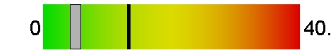
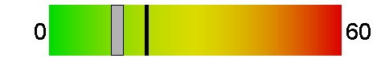
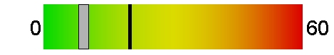
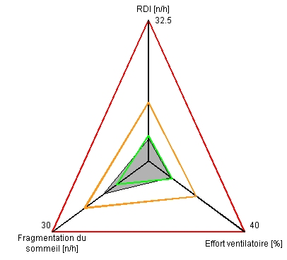

|
|
|
|
|
|
|
|
|
|
|
|
|
|
|
|
Patient |
|
| Nom: |
|
Sexe: |
|
Poids [kg]: |
|
Né(e) le [jj/mm/aa]: |
|
| Prénom: |
|
IMC: |
|
Taille [cm]: |
|
Date d'examen [jj/mm/aa]: |
01/07/19 |
|
Enregistrement |
|
| Durée examen [hh:mm:ss]: |
24:10:26 |
Validité du signal Jawac [%]: |
100 |
| Temps d'analyse total [hh:mm:ss]: |
09:06:19 |
|
|
|
Indicateurs de sévérité (Diagnostique adulte) |
|
Indice estimé d'évènements respiratoires (RDI) [n/h]:
Seuil [n/h]: 13.5 |
5.1 |
 |
Indice estimé de fragmentation du sommeil [n/h]:
Seuil [n/h]: 20 |
14 |
 |
Effort ventilatoire
Seuil [%]: 20 |
00:47:10
(9.3%) |
 |
|
Analyse Jawac |
|
| Temps sommeil total [hh:mm:ss]: |
08:26:08 |
|
 |
| RDI sur le dos [n/h]: |
4.1 |
|
| Abaissement mandibulaire moyen [mm] (mm) |
-4 |
|
| Oscillations mandibulaires moyennes [mm]: |
0.12 |
|
| Nombre total d'évènements: |
43 |
|
| Nombre d'évènements obstructifs (OE): |
34 |
4 /h |
| Nombre d'évènements centraux (CE): |
0 |
0 /h |
| Nombre d'évènements mixtes (ME): |
9 |
1.1 /h |
|
Analyse ECG |
|
| Rythme cardiaque moyen [bpm]: |
64.4 |
Puissance totale de RR [s²] |
0.46 |
| Moyenne des écarts RR [s]: |
0.93 |
Pourcentage d'énergie VLF [0.01-0.04]Hz [%]: |
24 |
| pNN50 [%]: |
15.2 |
Pourcentage d'énergie LF [0.04-0.15]Hz [%]: |
38.9 |
| SD1 (par rapport à l'axe principal) [ms]: |
0.23 |
Pourcentage d'énergie HF [0.15-0.4]Hz [%]: |
37.1 |
| SD2 (par rapport à l'axe perpendiculaire) [ms]: |
118.28 |
Ratio LF/HF: |
1.05 |
_FR_ShotECG_1.jpg)
_FR_ShotECG_2.jpg)
_FR_ShotECG_3.jpg)
_FR_ShotECG_4.jpg)
_FR_ShotECG_5.jpg)
_FR_ShotECG_6.jpg)
_FR_ShotECG_7.jpg)
_FR_ShotECG_8.jpg)
_FR_ShotECG_9.jpg)
_FR_ShotECG_10.jpg)
_FR_ShotECG_11.jpg)
_FR_ShotECG_12.jpg)
_FR_ShotECG_13.jpg)
_FR_ShotECG_14.jpg)
_FR_ShotECG_15.jpg)
_FR_ShotECG_16.jpg)
_FR_ShotECG_17.jpg)